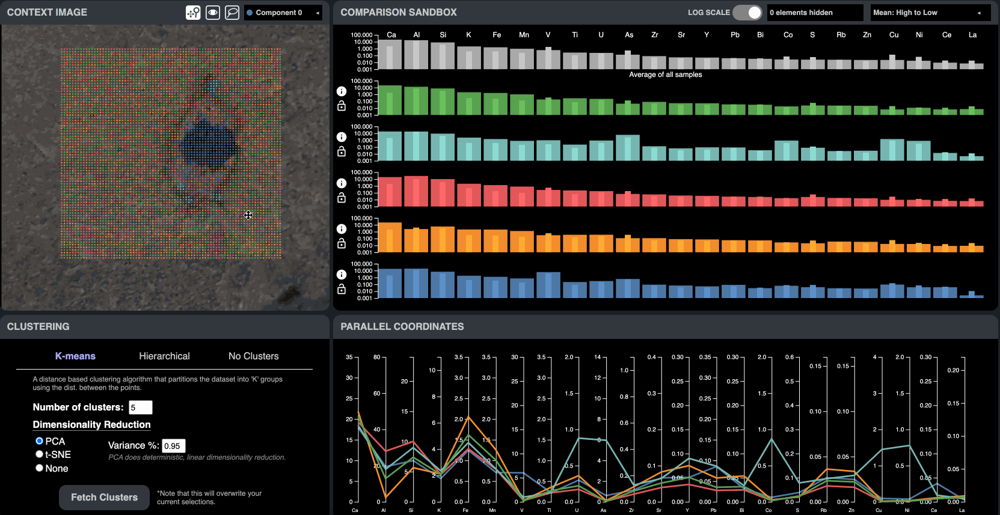
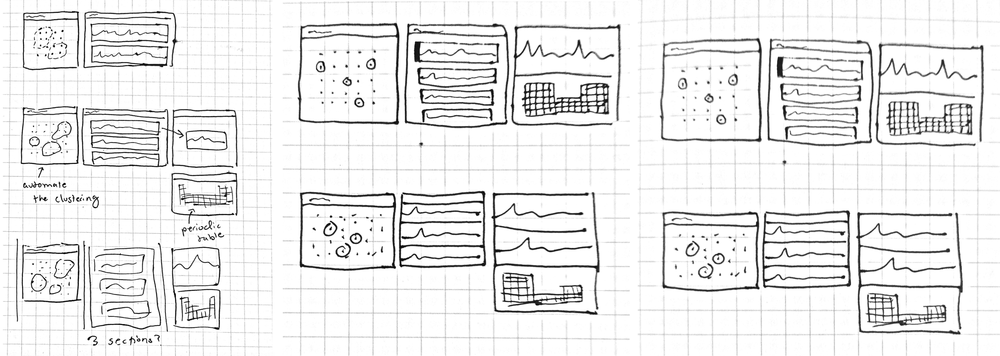
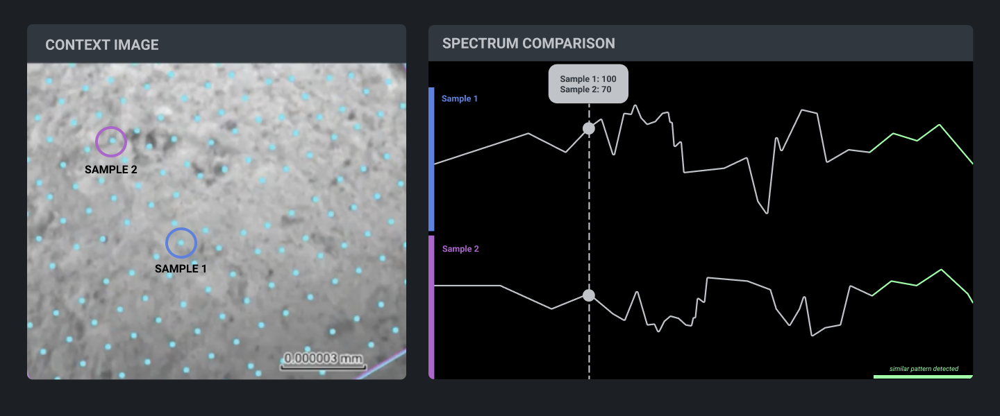
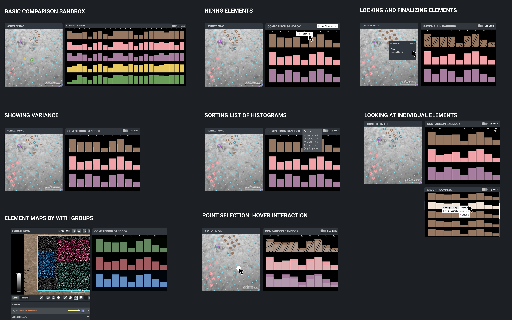
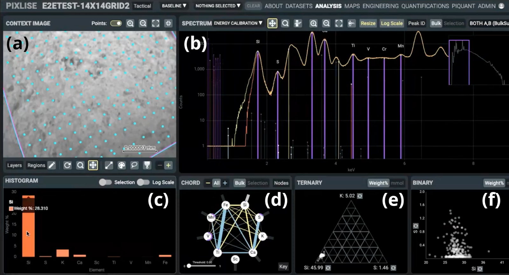
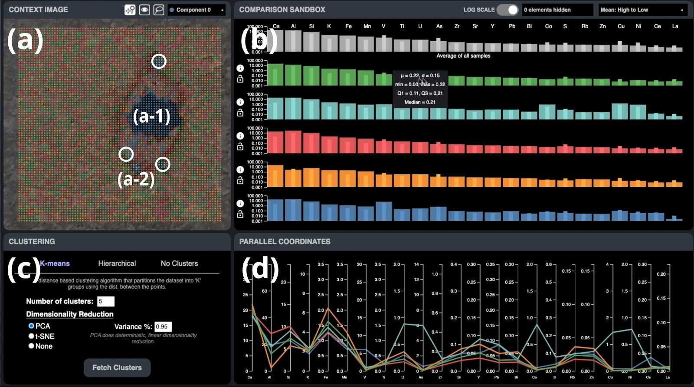

Working with NASA JPL, we developed an interactive tool that enables scientists to compare data from their PIXL tool. This project was a collaboration between with Lukas Hermann, Nur Yildirim, and Shravya Bhat.
🌐 Live URL
⌨️ Github Repository
Clustering server rate limitations
We are running the clustering backend on an AWS instance. Because it's a free trail of an instance, it will expire around Janurary 9th, 2021. The app will continue to work afterwards, but the clustering feature will not work unless you set up your own server. We are also using a free proxy server service (CORS-anywhere) to forward our CORS requests because otherwise we will get https client to http errors. Due to the limits of free AWS and the free proxy server service, the rate and speed of responses may be limited if the app traffic is very high.
In this case there are two possible solutions:
- Contact me and I can set up an alternative proxy server for you
- Clone our repository and set it up locally using the instructions in the README.

During the project, I maintained and set up the components in our web app, which was built in React. I implemented the design of the interface, set up information coordination between components, and programmed the majority of the interactions in the interface, such as:
- the lasso tool
- adding and removing groups
- the image viewer/overlay component with pan/zoom
- group annotation and locking
- element filtering and sorting
- and more!
I also worked with Lukas on the visualizations using d3.js. Lastly, I conceptualized and designed the core interactions, which I mocked up in Figma and validated with the key stakeholder, a NASA Co-Investigator, with a user study protocol that I created.
Abstract
NASA JPL scientists working on the micro x-ray fluorescence (microXRF) spectroscopy data collected from Mars surface perform data analysis to look for signs of past microbial life on Mars. Their data analysis workflow mainly involves identifying mineral compounds through the element abundance in spatially distributed data points. Working with the NASA JPL team, we identified pain points and needs to further develop their existing data visualization and analysis tool. Specially, the team desired improvements for the process of creating and interpreting mineral composition groups. To address this problem, we developed an interactive tool that enables scientists to (1) semi-automatically cluster the data, and (2) compare the clusters and individual data points to make informed decisions about mineral compositions. Our tool supports a hybrid data analysis workflow where the user can manually refine the machine generated clusters.
Introduction
Our project is carried out in collaboration with NASA Jet Propulsion Laboratory Human Interfaces Group in order to support the exploratory analysis of astrobiological data collected via Mars 2020 Perseverance rover. The mission of NASA scientists is to look for signs of past microbial life on Mars by examining the chemical makeup of rock and soil textures at a very fine scale. This is performed by analysing the micro x-ray fluorescence (microXRF) spectroscopy data collected by The Planetary Instrument for X-ray Lithochemistry (PIXL). By looking at the concentration and the spatial distribution of elements, the scientists are able to interpret the microXRF data and identify the mineral compounds that were likely created by microbes [2].
The PIXL instrument team performing this work include astrobiologists, sedimentologists, igneous petrologists, spectroscopists, and geochemists. An initial data visualisation tool prototype, Pixlise, is already in place to support scientists in this process [3]. Our preliminary discussions with the project team, therefore, focused on identifying the tasks and information needs of the scientists that might not be supported by the current app. In Pixlise, the data analysis tasks are mainly carried out using a map interface as the collected data involves spatially defined points with coordinates. The data analysis workflow has two major stages: (1) assigning elements to data points based on the spectroscopy data, (2) creating and interpreting mineral composition groups based on elemental abundance. Through a collaborative problem defining process, we decided to focus on the latter stage as the system in place is mostly targeted towards the former stage tasks.
In order to support the process of interpretation, we developed an interactive data visualization tool that presents contributions in terms of the comparison and clustering of data. Our standalone app presents an exploration of features and improvements that could be embedded into the future versions of the Pixlise tool. In the following sections, we first describe the existing tool and dataset, we then describe our tool development process and the interactive visualization techniques we propose. Finally, we walk through some use cases to illustrate the scenarios where our tool can support the data analysis process.
This application was developed over the course of about a month. We first had an initial meeting with one of our stakeholders, the project lead UX manager at NASA JPL where we gathered resources and learned about the possible problems that we could tackle. After more research into the datasets provided and some brainstorming about possible problem scopes, we presented initial mockups to the UX manager. Based on the feedback, we produced new mockups of 10 possible new interaction models or features and presented them to the co-investigator astrologists, who is a main beneficiary. Their input helped to validate our initial mockups, guide future design decisions and also helped us to prioritize which features to focus on. In the remaining weeks, we built the final application based on these findings.
Process mockups
 Initial sketches
 First pass at showing comparison
 10 possible interactions
Dataset, Pixlise App and The Data Analysis Workflow
PIXL data set is a collection of spatially localized spectroscopy data as the instrument on Perseverance rover passes over the sampling area. The microXRF data has 1024 ordinal channels, each with a count of x-rays sensed by the instrument at that particular channel. The dataset is organized into a CSV file that contains information on points, coordinate data (X, Y, Z), and spectrum data with more than 4000 points per each data point.
The current data visualization tool facilitates the data analysis workflow through multiple interaction techniques (Figure 1). The main interaction touchpoint is the context image pane (Figure 1a) that displays the discrete points in the microXRF data. Using this map display allows scientists to visually isolate, select, and analyze discrete geological features within a sample data point [1]. As a first step, users have to assign elements to each data point. The spectrum pane (Figure 1b) visualizes the energy spectral density [5] of data points individually or in bulk. By looking at the peaks in the wavelength, users are able to infer element transitions. The instrument can detect over 20 elements, including Na, Mg, Al, Si, P, S, Cl, K, Ca, Ti, V, Cr, Mn, Fe, Co, Ni, Cu, Zn, Br, Rb, Sr, Y, Ga, Ge, As, Zr, Rb, Sr, Y and Zr at 10’s ppm level [2]. The element assignment process is semi-automatic as the tool can infer the presence of some elements, yet the domain knowledge of scientists are necessary to fine tune and validate the assignment.

Figure 1: Pixlise Interface
Once the elements are assigned, users introspect the element abundance to make associations for mineral identification using supporting panes. The histogram tool (Figure 1c) shows the quantified weight percentages of different elements in selected samples in linear or log scale. The chord diagram (Figure 1d), the ternary diagram (Figure 1e), and the binary diagram (Figure 1f) indicate the correlations between abundant elements to inform the interpretation of mineral compositions.
While the Pixlise tool supports the process of element assignment and quantification, there is little support in terms of comparison between points and regions. Our interviews with the stakeholders, including the project lead UX Manager and the co-lead research scientist, revealed that there are several pain points and needs in terms of selection, grouping, annotation, clustering, and comparison. Specifically, the current interface does not provide any means to do multiple selections (individual or group) at the same time in order to compare the element distributions across different regions. Additionally, the scientists desired to have auto generated clusters with various algorithm options, so that they do not have to start from scratch and instead semi-automatically create groups of the mapped area. Our tool aims to address these gaps through extending the existing data analysis workflow with novel and targeted interaction design solutions.
Pixlise+
We present an interactive data visualization tool, Pixlise+, that extends the current system in place. We built our tool as a standalone application instead of integrated development, as the current architecture has several authentication layers that makes the development process difficult. However, our tool builds on the current application in terms of interface layout, interaction styles, and overall design to maintain familiarity.

Figure 2: Pixlise+ Interface
Pixlise+ interface consists of four main components: Context Image (Figure 2a), Comparison Sandbox (Figure 2b), Clustering (Figure 2c), and Parallel Coordinate Plots (Figure 2d). Below, we describe each component in detail.
Context Image: This 2D map is the main interaction touchpoint for the application. The visualization plots the collected data on the geographical context image as dot per point. There are 6400 data points arranged into a grid based on their spatial coordinates. Overlaying the datapoint over the real terrain view allows scientists to select and analyze data in accordance with the context. There are three major actions the users can take in this view. First, using the navigation icon, they can pan and zoom (in or out). Second, using the examining tool (eye icon), they can hover over individual points to view related data in isolation, which is displayed in the Comparison Sandbox. Finally, the scientists can select and group the data points using the lasso tool and component dropdown menu. Once a component group is created by clicking on “add item”, the selected data points will be displayed in that group’s color. Consequent lasso actions will add to the selection, while holding down shift will remove points from the selection. Detailed information about the groups in terms of element concentration is displayed in the Comparison Sandbox, so that the scientists can iterate on grouping data into clusters based on similarity.
Comparison Sandbox: This view displays the element percentages in the selected data points as histograms. As opposed to displaying one histogram at a time as in the previous implementation, our tool can display up to 20 histograms for the comparison of potential mineral compositions across clusters. When initiated the Comparison Sandbox displays the average element weights of all samples in the dataset in logarithmic or linear scale. The element symbols are displayed as columns at the top and users are able to hide less important elements to focus on the most relevant ones. The histogram can be sorted based on the element abundance (using means, high to low or low to high) or the coefficient of variation (standard deviation divided by the mean). The histogram tooltip displays more detailed statistical information per element, including mean, standard deviation, min, max, Q1, Q3, and the median. This information is useful to help the user determine how the distribution of data looks. Min, max, Q1, Q3 and median are especially important if the distribution is not a normal distribution. Additionally, variance in an element is shown as an inner bar within each bar of the histogram, which informs whether selected data points demonstrate similar characteristics.
As users create multiple groups using the selection and component creation tools in the Context Image view, the histograms in the Comparison Sandbox update to display multiple groups at once. Using histogram controls, users can lock and unlock a group before finalizing their selection. Additionally, they can annotate the group with insights. Once a group is annotated, hovering over the group in the Context Image view shows the annotations overlaid on top. Finally, when users want to examine how a single data point fits in a group, hovering over the data point in the Context Image view displays the element percentages of the individual data point across all histograms as overlaid ticks on bars.
Parallel Coordinates Plots: Histograms are useful in characterizing groups through element abundance, but it can be difficult to distinguish fine grain differences among the data. To enable a more granular exploration, Parallel Coordinates Plots (PCP) displays percent values based on the minimum and maximum range. Therefore, nuanced differences between groups can be seen per each element.
Clustering: Grouping the data points into clusters are usually carried out manually as the scientists have extensive expertise in terms of identifying geologic features in images. However, machine learning algorithms can provide particular or generalizable insights depending on the dataset. Our tool utilizes various ML techniques for auto generating clusters as starting points for a semi-automatic data analysis workflow. Clustering tool provides three different algorithms: k-means clustering, hierarchical clustering, and minimum maximum. K-means clustering partitions the dataset into a user defined number of clusters using the distance between the points. Scientists can choose to apply dimensionality reduction using PCA or t-SNE. PCA performs deterministic linear dimensionality reduction and takes in variance as a hyperparameter. T-SNE, on the other hand, performs probabilistic and non-linear dimensionality reduction and takes in perplexity as a hyperparameter.
Hierarchical clustering builds a hierarchy of clusters based on a distance metric defined by the linkage hyperparameters (ward, complete, average, or single). Similar to k-means, the number of clusters is user defined in hierarchical clustering. Finally, users can create auto generated groups without using a clustering algorithm. In this case, they can group the dataset based on maximum or minimum abundance of elements. The clustering tool aims to enable scientists to play around with different clustering options and fine tune parameters for finding insights.
Technical Implementation
We developed our application using React and deployed it using Github pages. Our code is open source [4]. While React was used to develop the UI and coordinate the different components across the application, D3.js, a popular visualization Javascript library, was used to create the visualizations within the components.
For the clustering implementation, we use a Python backend to dynamically generate cluster information based on the many different hyperparameters that our app allows.The client app and the Python backend communicate using Flask and an ajax call using jQuery. The backend itself is hosted on Amazon Web Services. The clustering backend uses popular data science libraries such as sklearn and pandas. Sklearn is used to perform all of our machine learning algorithms, including hierarchical clustering, t-SNE, PCA, and k-means. Our application also enables hyperparameters such as linkage, variance percentage, perplexity, and number of clusters, to be passed to the backend as well.
Results
We present a walkthrough of our tool in our project demonstration video using a sample dataset called “King’s Court”. This dataset has samples from a terrain with a crater-like geological feature. Using the clustering tool, we were able to test various algorithms and hyperparameters for grouping the dataset into meaningful subsets. Our explorative results show that both PCA and t-SNE were able to identify the large cluster around the crater (Figure 2a-1) with multiple discrete groups around its perimeters (Figure 2a-2). Once the initial groups were identified using the clustering algorithm, we used the hovering feature in the Context Image tools for examining individual data points within clusters. Based on the histogram information in the Comparison Sandbox, we were able to add or remove specific data points using the lasso tool.
Discussion and Future Work
The main contributions of our work include interaction techniques for the comparative analysis and clustering of microXRF spectroscopy data in the context of the PIXL project. Our tool Pixlise+ enabled a semi-automatic data analysis workflow that enabled an augmented grouping of microXRF data based on element abundance. Using built-in statistical analyses, scientists can compare several clusters at once to fine tune and validate the grouping of the data. Moreover, tools that support documentation including locking and annotation open the way to future developments for multi-user collaboration.
Our work reveals several directions for future research. For the overall data analysis workflow, blending human and machine intelligence raises major research questions. How can we combine manually created groups with machine generated clusters to provide support scientists’ agency while removing tedious work? What kind of interaction techniques (e.g. overlays) might be suited for representing human and machine generated groups? Should the system suggest potential clusters to validate human insights through mixed initiative interaction? These are some questions we would like to explore going forward. In addition, sharing annotated datasets present an interesting direction for future research in terms of collaborative and asynchronous workflows. Potential techniques include exporting screenshots, sharing workspaces, and sharing the dataset to be opened with a different program or tool. We will also explore the database requirements to allow saving and sharing.
Finally, our short term goals include the integration of Pixlise+ into the current system used by NASA JPL. We will continue working with our collaborators to collect feedback on our tool through user testing, iterative development, and deployment.
Special thanks
Thank you to IDS professors Dominic Mortiz and Adam Perer and the TAs for their help! And thank you to the researchers and designers at NASA for letting us work with them on this project!
References
[1] PIXELATE: novel visualization and computational methods for the analysis of astrobiological spectroscopy data. link
[2] PIXL for Scientists. link
[3] PIXLISE Mars Rock Sample Investigation. link
[4] Pixlise+ Github Repository. link
[5] Spectral Density. link